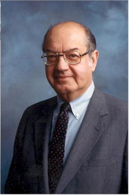
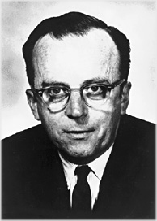

Po co nam strony internetowe
By najpierw dowiedzieć się po co nam strony internetowe w codziennym życiu
najpierw potrzeba dowiedzieć się kiedy powstał internet
oraz jak nazywali się jego wynalazcy, którzy ułatwili nam życie.
Wynalazcami Internetu byli:
-  Paul Baran ( badacz Polskiego pochodzenia )
-  Joseph Licklider ( naukowiec Amerykański )
Pierwsze węzły sieci powstały 1969roku w Stanach Zjednoczonych i tę oto datę uznaje się za początek internetu.
W roku 1970 czyli rok po powstaniu pierwszego węzła sieci
Wielka Brytania także stworzyła swoją sieć i została stworzona kolejna w USA.
W tym czasie powstała pierwsza poczta elektroniczna jak i pierwszy wysłany e-mail,
a jego autorem był Raymond Tomlinson, niestety treść tego maila nie została zarchiwizowana.
Pierwszą wyszukiwarką stron WWW na świecie (oraz najbardziej "prymitywną")
był WorldWideWeb (później nazwa zmieniona na Nexus) który powstał w 1990 roku.
Wyszukiwarki WWW zmieniały w ciągu lat swoją użyteczność.
W niedalekich czasach ludzie wykorzystywali strony internetowe by np: wysyłać maile (do przyjaciół/rodziny)
lub by wyszukiwać potrzebne informacje.
A 14 lutego 2005 roku powstała strona "Youtube" Która pozwalała ludziom za darmo oglądać/publikować filmy.
Dzięki temu ludzie mogli zacząć spędzać w internecie jeszcze więcej czasu.
W teraźniejszych czasach dzięki stronom internetowych możemy nie tylko oglądać filmy,
wysyłać maile lub wyszukiwać informacje lecz także reklamować nasze usługi,
ponieważ internet jest rzeczą coraz bardziej powszechną.